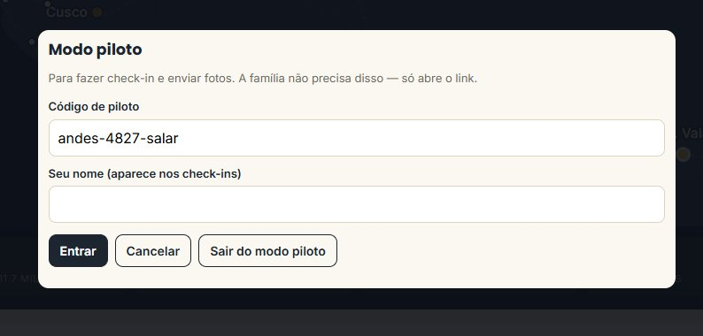
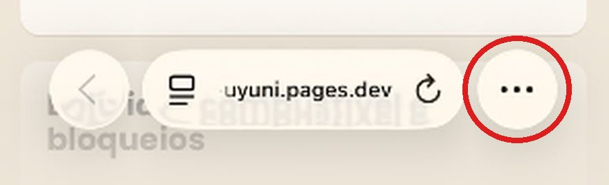
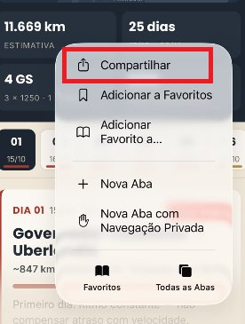
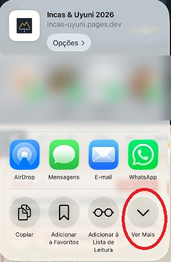
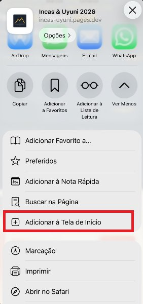
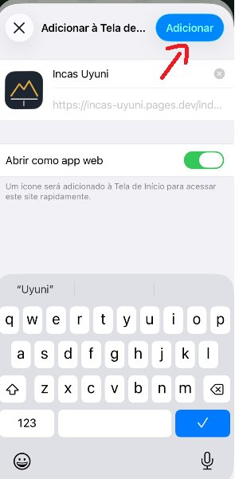
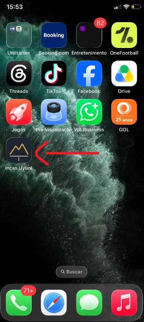

Como instalar o app da viagem no seu celular — leva 2 minutos.
—https://incas-uyuni.pages.devToque no botão "Abrir o app como piloto" lá em cima. Use o Safari (iPhone). Vai aparecer a janela "Modo piloto" com o código já preenchido.

Em "Seu nome", escreva seu nome (é o que aparece nos check-ins) e toque em Entrar.
Toque nos três pontinhos (•••) no canto de baixo, ao lado do endereço.

Toque em Compartilhar.

Toque em Ver Mais.

Role um pouco para baixo e toque em "Adicionar à Tela de Início".

Deixe ligado "Abrir como app web" e toque em Adicionar.

O ícone Incas Uyuni aparece na tela do celular.

Abra pelo ícone. Se ele pedir de novo, toque em "Sou piloto" na faixa escura do topo, cole o código (botão Copiar lá em cima) e coloque seu nome — só na primeira vez.
Check-in: escolha o dia, toque na parada e em "✓ Abastecemos aqui" (ou "Chegamos aqui" no destino). Todos veem na hora — os outros pilotos e a família.
Fotos: tire com a câmera normal do celular. Depois, na parada, toque em "📷 Fotos" e escolha na galeria. O original continua na sua galeria. Vídeos ficam só no celular.
Sem sinal? Pode usar normalmente — aparece ⏳ e tudo sobe sozinho quando o sinal voltar. No iPhone, abra o app quando tiver internet (no hotel, à noite) para enviar.
Recados: quando chegar recado da família, aparece um botão verde no topo. Vocês podem responder no mural.
Fim do dia: o botão verde "Chegamos — avisar no WhatsApp" manda a mensagem pronta para o grupo da família.
Na faixa escura do topo: ✓ tudo enviado = tudo certo · ⏳ aguardando envio = está guardado, sobe quando tiver sinal.
Boa estrada! 🏍 · Node Data